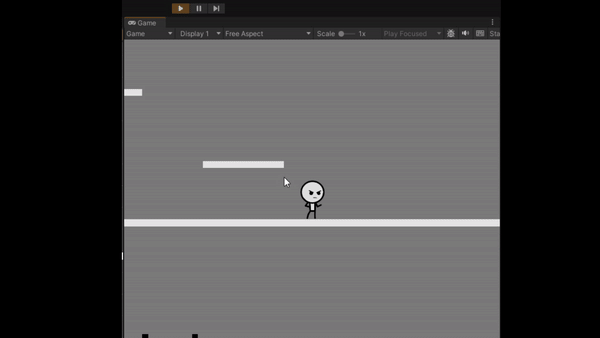
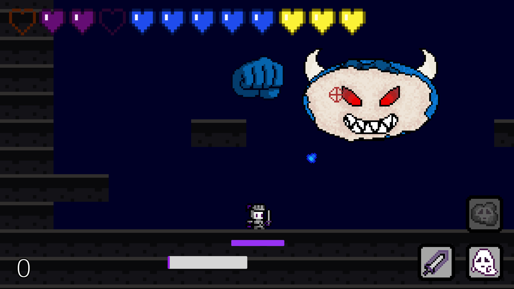
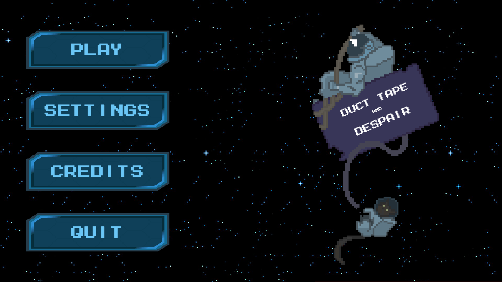
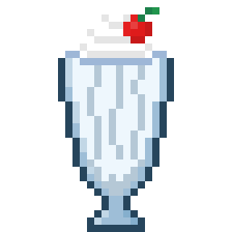
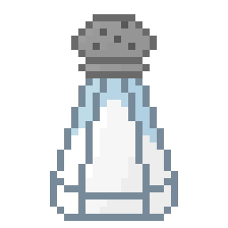
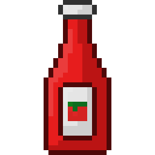
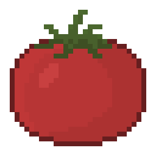
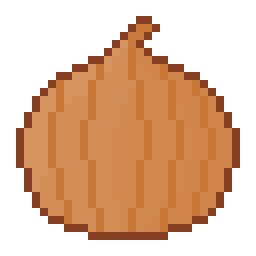
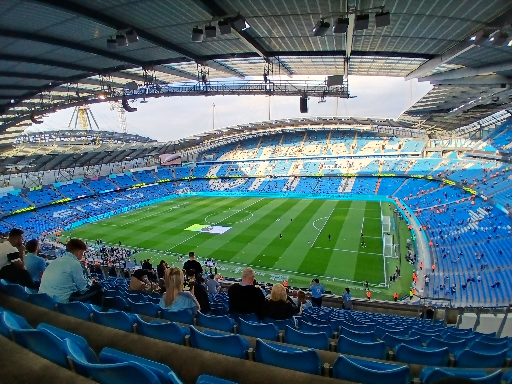

It's been one year since I graduated and started this blog. It feels almost as if it was yesterday when I heard my name pronounced incorrectly, and then walked across the stage to receive my diploma. Sometimes, it feels like the weeks just fly by and you're already in the next season. It's been an eventful year for sure, but for myself and the whole world. So after 365 days, what have I accomplished?
I've started and completed many projects over the past few months and I've talked a bit about them in my recent posts. Since my last one focused a lot on my game dev journey up until my first hackathon, I'll quickly go through it again. The first project I started working on after my graduation was my 2D puzzle platformer game based around using color-themed abilities to progress through the levels. This was my first game I completed from scratch (not including the games I made during tutorials) and overall, I'm very proud of it. I did suffer a bit of scope creep as I wanted this game to be a simple project to get me started but it ended up expanding beyond that.
I wanted to try something new for the platforms and movement so I attempted to use raycasting to detect collisions. This took a lot of time to get working but I'm glad that I tried it out in case I ever want to revisit it in the future. Other than that, I ended up adding collectibles in the levels that you had to think out of the box to acquire and if you obtained them all, you would unlock a secret ending. Finally, I spent a lot of time and effort with the level design, trying to create puzzles that weren't too easy, but also not impossible. It was difficult to find a good balance and to adapt the later levels to utilize the newly unlocked powers. I ended up completing the project in around October.

Not that long after I completed it, I began my next project: My top-down 2D roguelike shooter. I've always wanted to create a game in this genre, but I never knew what theme to give it in order to be unique. So, I did some brainstorming and ended with this: You are an employee in a fast food restaurant and while working one day, the town starts to be overrun with zombies. Now, you must defend yourself (and your restaurant) using whatever you can find around you.
The main idea of the game is to be a bit comedic and not take itself too seriously as you'll be attacking zombies by flinging burgers at them. It started as a small idea but since then, it has expanded into so much. I have created over a hundred weapons and items, over a hundred enemy and boss types, and so much more. I ended up having to take a break from this project because I had other plans coming up.
Around Christmas time, I made some improvements and additions to my web-based Jeopardy and Family Feud games so that I could play them with my family during the holidays. Then in January, I challenged myself to create an entire game from scratch in just 24 hours. To add a bit of a spin on it, I interviewed some friends and asked them some general questions and ended up using their ideas and voices to build my game. Once the 24 hours were complete, I gave it to them to try it out and to hear their reactions once they learnt what the purpose of the interviews was.

Surprisingly, there weren't any game-breaking bugs, just some small issues here and there but overall, I was happy with the result. I managed to create 5 separate characters, each with their own abilities, and multiple enemy types that were scattered through a few levels. What I'm most proud of was the boss fight I created at the end as it was very fun to play and it taught me a lot about creating engaging boss fights. At the end of the day, it was made in 24 hours so I didn't expect it to be amazing, but it was good enough for me.
Debugging is like being a detective in a crime movie where you're also the murderer.
After this, I participated in my first hackathon where I created a game with two of my friends. It was a simple game but its premise gives it the capabilities to be very expandable. After that, I participated in a 7-day online game jam with over 2000 submissions. I had one friend who helped me make the art, and another who helped with music, while I created the game and implemented sound effects. We ended up placing 171/2183 which we thought was incredible given this was our first time doing this. We had a lot of fun and this also taught me a lot about game development.

Which leads into the last and current project that I've been working on: My roguelike shooter game. After completing the game jam, I realized that in order to scale the game to what I wanted, I would have to redo a lot of the main code. So, I decided to restart from scratch and completely refactor the code. This was a great decision because it allowed me to optimize areas so they could be scalable and allowed me to write cleaner code.
I have also been working on improving my art skills by drawing all of the in game art from scratch, all by myself. In the game jam, I did some very small-scale art, mainly some background decorations and they weren't the greatest. So, I took it as a challenge to learn and become a better pixel artist. Here are some of the drawings I made:





In between the larger projects in the past months, I also spent time working on other projects of mine. The most notable one is my website to create custom assets for the popular video game, Dead By Daylight. I pushed a few updates in the last year that focused primarily on new content, improved mobile UI, and bug fixes. I also updated my portfolio website whenever I completed a new task and ended up completely refactoring the website as the old one wasn't satisfying my needs.
I also spent some of my time creating some Discord bots for some friends who wanted to add some functionalities to their servers, and a Python speech recognition software to translate your words into actions in a game. I was inspired from multiple online videos of people trying to complete games like this and wanted to try it out myself. I haven't come around to actually playing with it, but I have tested it out enough to make sure that it works. Maybe I'll get to it in the near future!
Finally, the last thing I did in the past year was actually go on vacation. I went to the UK and spent a few days visiting the landmarks, going to the London Zoo, and even watching a game in Manchester City. It was a very fun experience and it gave me a nice break from coding as I was starting to feel a bit burnt out.

And now we're here! 12 months and 8 posts later, and it's time to start a new year post-graduation. I guess if there's anything I learnt during this time, it's that it's important to always try and write clean code and think of the future when you're coding. It's better to take the longer and harder path to creating a solution so that you don't have to redo it in the future when the time comes. Also, it's very important to take breaks and not burn yourself out. Working on one, or multiple projects nonstop is an easy way to get fed up with it. Try to vary the things you do and take some breaks every now and then so it doesn't start to feel like a chore. At the end of the day, coding should be something that you enjoy doing. And although there are times when you might want to yell at your computer because of the one bug you can't squash, just think about how satisfying it will be when you finally fix it… And then end up creating 3 more bugs!